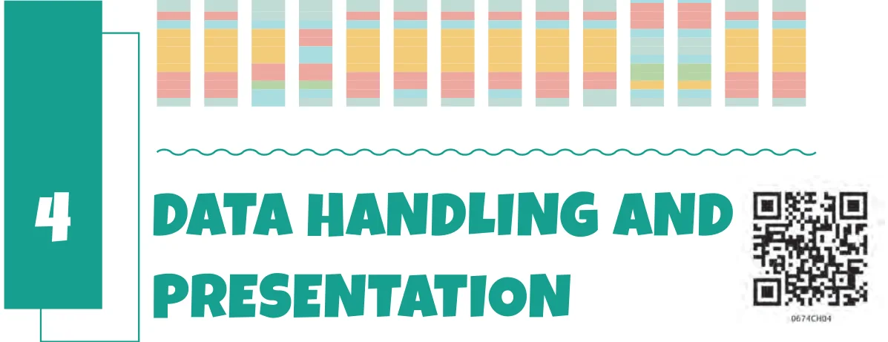

If you ask your classmates about their favourite colours, you will get a list of colours. This list is an example of data. Similarly, if you measure the weight of each student in your class, you would get a collection of measures of weight - again data. Any collection of facts, numbers, measures, observations or other descriptions of things that convey information about those things is called data. We live in an age of information. We constantly see large amounts of data presented to us in new and interesting ways. In this chapter, we will explore some of the ways that data is presented, and how we can use some of those ways to correctly display, interpret and make inferences from such data!
4.1 Collecting and Organising Data
Navya and Naresh are discussing their favourite games.
Cricket is my I play cricket sometimes favourite game! but hockey is the game I like the most.
I think cricket is the I am not sure. How can we find most popular game in the most popular game in our our class. class?
Naresh and Navya decided to go to each student in the class and ask what their favourite game is. Then they prepared a list. Navya is showing the list:
Mehnoor - Kabaddi Pushkal - Satoliya (Pittu) Anaya - Kabaddi Jubimon - Hockey Densy - Badminton Jivisha - Satoliya (Pittu) Simran - Kabaddi Jivika - Satoliya (Pittu) Rajesh - Football Nand - Satoliya (Pittu) Leela - Hockey Thara - Football Ankita - Kabaddi Afshan - Hockey Soumya - Cricket Imon - Hockey Keerat - Cricket Navjot - Hockey Yuvraj - Cricket Gurpreet - Hockey Hemal - Satoliya (Pittu) Rehana - Hockey Arsh - Kabaddi Debabrata - Football Aarna - Badminton Bhavya - Cricket Ananya - Hockey Kompal - Football Sarah - Kabaddi Hardik - Cricket Tahira - Cricket
She says (happily), “I have collected the data. I can figure out the most popular game now!”. A few other children are looking at the list and wondering, “We can’t yet see the most popular game. How can we get it from this list?”.